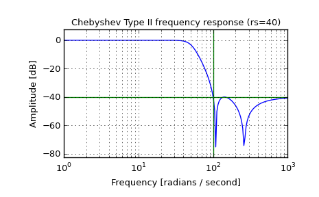

scipy.signal.cheby2¶
- scipy.signal.cheby2(N, rs, Wn, btype='low', analog=False, output='ba')[source]¶
Chebyshev type II digital and analog filter design.
Design an Nth order digital or analog Chebyshev type II filter and return the filter coefficients in (B,A) or (Z,P,K) form.
Parameters : N : int
The order of the filter.
rs : float
The minimum attenuation required in the stop band. Specified in decibels, as a positive number.
Wn : array_like
A scalar or length-2 sequence giving the critical frequencies. For Type II filters, this is the point in the transition band at which the gain first reaches -rs. For digital filters, Wn is normalized from 0 to 1, where 1 is the Nyquist frequency, pi radians/sample. (Wn is thus in half-cycles / sample.) For analog filters, Wn is an angular frequency (e.g. rad/s).
btype : {‘lowpass’, ‘highpass’, ‘bandpass’, ‘bandstop’}, optional
The type of filter. Default is ‘lowpass’.
analog : bool, optional
When True, return an analog filter, otherwise a digital filter is returned.
output : {‘ba’, ‘zpk’}, optional
Type of output: numerator/denominator (‘ba’) or pole-zero (‘zpk’). Default is ‘ba’.
Returns : b, a : ndarray, ndarray
Numerator (b) and denominator (a) polynomials of the IIR filter. Only returned if output='ba'.
z, p, k : ndarray, ndarray, float
Zeros, poles, and system gain of the IIR filter transfer function. Only returned if output='zpk'.
See also
Notes
The Chebyshev type II filter maximizes the rate of cutoff between the frequency response’s passband and stopband, at the expense of ripple in the stopband and increased ringing in the step response.
Type II filters do not roll off as fast as Type I (cheby1).
Examples
Plot the filter’s frequency response, showing the critical points:
>>> from scipy import signal >>> import matplotlib.pyplot as plt
>>> b, a = signal.cheby2(4, 40, 100, 'low', analog=True) >>> w, h = signal.freqs(b, a) >>> plt.plot(w, 20 * np.log10(abs(h))) >>> plt.xscale('log') >>> plt.title('Chebyshev Type II frequency response (rs=40)') >>> plt.xlabel('Frequency [radians / second]') >>> plt.ylabel('Amplitude [dB]') >>> plt.margins(0, 0.1) >>> plt.grid(which='both', axis='both') >>> plt.axvline(100, color='green') # cutoff frequency >>> plt.axhline(-40, color='green') # rs >>> plt.show()
